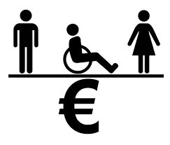
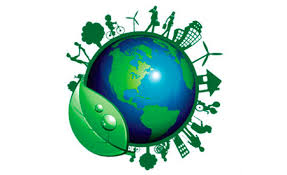

O ODS 8, ou Objetivo de Desenvolvimento Sustentável número 8, faz parte de uma agenda global imposta pelas Nações Unidas para promover um futuro mais sustentável e inclusivo para todos. Este objetivo é conhecido como "Trabalho Decente e Crescimento Econômico" e abrange diversas áreas fundamentais para o progresso das sociedades em todo o mundo.
Um dos aspectos centrais do ODS 8 é a promoção do emprego pleno, produtivo e decente para todos. Isso implica garantir que as pessoas tenham acesso a oportunidades de emprego que ofereçam condições dignas, exercício justo e segurança no trabalho. Além disso, busca-se erradicar todas as formas de trabalho infantil e de trabalho provocadas, combatendo assim a exploração de pessoas vulneráveis.
O crescimento econômico sustentável é outro pilar importante do ODS 8. Isso envolve o estímulo ao crescimento econômico inclusivo, que beneficia não apenas as grandes corporações, mas também as pequenas e médias empresas, bem como os setores mais vulneráveis da sociedade. A ideia é que o crescimento econômico não deva ser realizado à custa do meio ambiente, promovendo, portanto, uma abordagem mais sustentável.
O ODS 8 também enfatiza a necessidade de melhorar o acesso aos serviços financeiros, especialmente para as populações mais marginalizadas. Isso inclui o fortalecimento de instituições financeiras e a promoção da inclusão financeira, permitindo que mais pessoas tenham acesso a crédito e serviços bancários básicos.
Em resumo, a ODS 8 busca criar um mundo onde o trabalho seja digno, o crescimento econômico seja sustentável e o acesso a serviços financeiros seja mais equitativo. Para atingir esses objetivos, é fundamental o envolvimento de governos, empresas, organizações da sociedade civil e cidadãos em todo o mundo, trabalhando juntos para construir um futuro mais próspero e justo para todos.
Ações
Promover o crescimento econômico sustentado, inclusivo e sustentável, emprego pleno e produtivo e trabalho decente para todas e todos
Ação 8.1
Sustentar o crescimento econômico per capita de acordo com as circunstâncias nacionais e, em particular, um crescimento anual de pelo menos 7% do produto interno bruto [PIB] nos países menos desenvolvidos
Ação 8.2
Atingir níveis mais elevados de produtividade das economias por meio da diversificação, modernização tecnológica e inovação, inclusive por meio de um foco em setores de alto valor agregado e dos setores intensivos em mão de obra
Ação 8.3
Promover políticas orientadas para o desenvolvimento que apoiem as atividades produtivas, geração de emprego decente, empreendedorismo, criatividade e inovação, e incentivar a formalização e o crescimento das micro, pequenas e médias empresas, inclusive por meio do acesso a serviços financeiros
Ação 8.4
Melhorar progressivamente, até 2030, a eficiência dos recursos globais no consumo e na produção, e empenhar-se para dissociar o crescimento econômico da degradação ambiental, de acordo com o Plano Decenal de Programas sobre Produção e Consumo Sustentáveis, com os países desenvolvidos assumindo a liderança

Ação 8.5
Até 2030, alcançar o emprego pleno e produtivo e trabalho decente para todas as mulheres e homens, inclusive para os jovens e as pessoas com deficiência, e remuneração igual para trabalho de igual valor
Ação 8.6
Até 2020, reduzir substancialmente a proporção de jovens sem emprego, educação ou formação
Ação 8.7
Tomar medidas imediatas e eficazes para erradicar o trabalho forçado, acabar com a escravidão moderna e o tráfico de pessoas, e assegurar a proibição e eliminação das piores formas de trabalho infantil, incluindo recrutamento e utilização de crianças-soldado, e até 2025 acabar com o trabalho infantil em todas as suas formas
Ação 8.8
Proteger os direitos trabalhistas e promover ambientes de trabalho seguros e protegidos para todos os trabalhadores, incluindo os trabalhadores migrantes, em particular as mulheres migrantes, e pessoas em empregos precários

Ação 8.9
Até 2030, elaborar e implementar políticas para promover o turismo sustentável, que gera empregos e promove a cultura e os produtos locais
Ação 8.10
Fortalecer a capacidade das instituições financeiras nacionais para incentivar a expansão do acesso aos serviços bancários, de seguros e financeiros para todos
Ação 8a
Aumentar o apoio da Iniciativa de Ajuda para o Comércio [Aid for Trade] para os países em desenvolvimento, particularmente os países menos desenvolvidos, inclusive por meio do Quadro Integrado Reforçado para a Assistência Técnica Relacionada com o Comércio para os países menos desenvolvidos
Ação 8b
Até 2020, desenvolver e operacionalizar uma estratégia global para o emprego dos jovens e implementar o Pacto Mundial para o Emprego da Organização Internacional do Trabalho [OIT]
A ODS 8 desempenha um papel fundamental no Brasil. Esta meta é de suma importância, pois está diretamente ligada à melhoria da qualidade de vida da população brasileira. Promo ver o crescimento econômico sustentável implica não apenas em aumentar o Produto Interno Bruto (PIB), mas também em garantir que esse crescimento seja inclusivo, beneficiando todas as camadas da sociedade. Além disso, o foco em empregos produtivos e decentes é crucial para reduzir a desigualdade e combater a pobreza no país. No contexto brasileiro, a ODS 8 representa uma oportunidade para impulsionar o desenvolvimento econômico de forma equitativa, promovendo a criação de empregos de qualidade e contribuindo para a estabilidade social e o bem-estar de todos os cidadãos.
O acompanhamento das ODS da ONU pelo governo brasileiro é um compromisso vital para o desenvolvimento sustentável do país e o bem-estar de sua população. É uma jornada desafiadora, mas fundamental, que exige cooperação e ação contínua para alcançar um futuro mais justo e sustentável